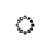

Warning!
You browser is not supported. You might expect inconsistent behaviours and must not use the viewer to produce a diagnostic.
-
{{ series[seriesIndex].numberOfFrames }}
[{{ series[seriesIndex].tags[MODALITY] }}] {{ series[seriesIndex].tags[SERIES_DESCRIPTION] }}
-
{{ numberOfFrames }}
[{{ series[seriesIndex].tags[MODALITY] }}] {{ series[seriesIndex].tags[SERIES_DESCRIPTION] }}